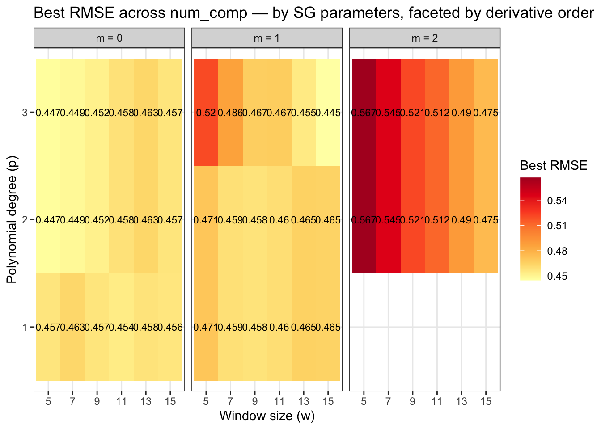
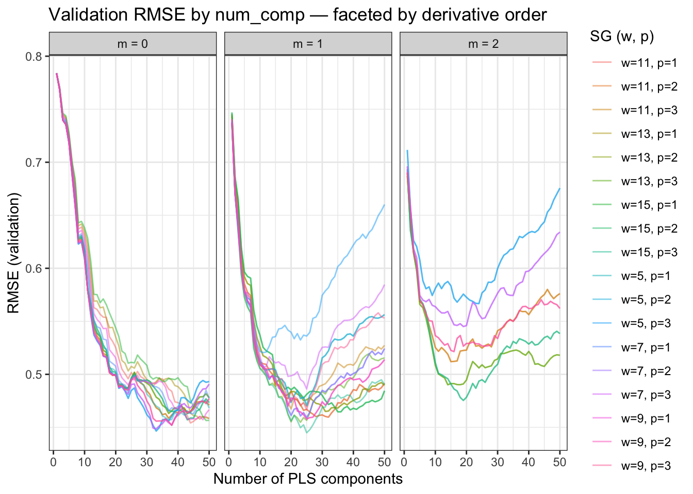

Code
library(tidyverse)
library(tidymodels)
library(prospectr)
library(resemble)
library(here)
library(plsmod)
source(here("R", "utils.R"))
source(here("R", "load.R"))
source(here("R", "steps.R"))
source(here("R", "split.R"))Savitzky-Golay (SG) smoothing and differentiation is applied to MIR spectra before modelling to suppress baseline drift and sharpen absorption features. It has three parameters: window size w (number of channels), polynomial degree p, and derivative order m. These interact non-trivially with the number of PLS components, so they are tuned jointly with PLSR rather than fixed by convention.
The target property here is log10(exCs137 / totalCs137) — the same as the primary modelling notebook — so the parameters found here are directly transferable.
library(tidyverse)
library(tidymodels)
library(prospectr)
library(resemble)
library(here)
library(plsmod)
source(here("R", "utils.R"))
source(here("R", "load.R"))
source(here("R", "steps.R"))
source(here("R", "split.R"))# --- Data -------------------------------------------------------------------
WET_PATH <- here("data-raw", "WetData_2013_2023.csv")
SPECTRA_PATH <- here("data-raw", "1320_Jumpei_spectra_outlier_full.rds")
BY_WET <- "ID"
BY_SPECTRA <- "sample_id"
# --- Target property --------------------------------------------------------
TARGET <- "exCs137_totalCs137"
# --- Filtering --------------------------------------------------------------
EXCLUDE_YEARS <- c(2021, 2022, 2023)
# --- Preprocessing ----------------------------------------------------------
RESAMPLE_BY <- 5L
# --- SG tuning grid ---------------------------------------------------------
SG_W_MIN <- 5L # must be odd
SG_W_MAX <- 15L # must be odd
SG_P_MAX <- 3L # constraints enforced in grid: p < w and p >= m
SG_M_MAX <- 2L # derivative order: 0 = smoothing, 1 = first, 2 = second
# --- Splitting --------------------------------------------------------------
SEED <- 123L
TRAIN_PROP <- 0.75
CALIB_PROP <- 0.65
KS_MAX_EXPL_VAR <- 0.99
# --- PLSR -------------------------------------------------------------------
MAX_NCOMP <- 50L
set.seed(SEED)raw <- load_raw_data(
wet_path = WET_PATH,
spectra_path = SPECTRA_PATH,
by_wet = BY_WET,
by_spectra = BY_SPECTRA
)prepared <- raw |>
filter(
!year %in% EXCLUDE_YEARS,
!is.na(.data[[TARGET]]),
.data[[TARGET]] > 0
)
nrow(prepared)[1] 1592Kennard-Stone sampling on spectral PCA scores ensures the training set covers the spectral space uniformly. This matters for SG tuning: a training set that leaves spectral gaps could favour parameters that happen to smooth over noisy regions rather than parameters that extract genuine chemical information.
split <- ks_split(prepared, train_prop = TRAIN_PROP, calib_prop = CALIB_PROP)The SG parameters w, p, and m are marked as tune() so the grid search can vary them. All other preprocessing steps are fixed: log₁₀ outcome transform, spectral resampling at 5 cm⁻¹, and SNV scatter correction applied before SG differentiation.
spc_cols <- grep("^X\\d+", names(training(split)), value = TRUE)
meta_cols <- setdiff(names(training(split)), c(TARGET, spc_cols))
rec <- recipe(training(split)) |>
update_role(all_of(TARGET), new_role = "outcome") |>
update_role(all_of(spc_cols), new_role = "predictor") |>
update_role(all_of(meta_cols), new_role = "metadata") |>
step_log(all_outcomes()) |>
step_resample(by = RESAMPLE_BY) |>
step_snv() |>
step_sg(w = tune(), p = tune(), m = tune())PLSR is used as the model for tuning because it is fast, well-suited to high-dimensional collinear spectra, and its optimal component count is informative: if good SG parameters require many components, the preprocessing is doing little useful work.
pls_wf <- workflow() |>
add_recipe(rec) |>
add_model(
pls(num_comp = tune()) |>
set_engine("mixOmics") |>
set_mode("regression")
)The SG grid is constructed explicitly to respect two hard constraints: polynomial degree must be strictly less than the window size (p < w), and the derivative order must not exceed the polynomial degree (m ≤ p). Violating either makes the filter mathematically ill-defined. The joint grid crosses all valid SG combinations with every PLS component count up to MAX_NCOMP.
sg_grid <- expand.grid(
w = seq(SG_W_MIN, SG_W_MAX, by = 2L),
p = seq_len(SG_P_MAX),
m = seq(0L, SG_M_MAX)
) |>
filter(p < w, p >= m)
joint_grid <- expand_grid(
num_comp = seq_len(MAX_NCOMP),
sg_grid
)
nrow(joint_grid)[1] 2400sg_tuned <- tune_grid(
pls_wf,
resamples = validation_set(split),
grid = joint_grid,
metrics = metric_set(rmse, rsq)
)Each tile shows the best validation RMSE achievable with that (w, p) combination, minimised over all num_comp values. Facets separate the three derivative orders: m = 0 is pure smoothing, m = 1 is the first derivative (removes additive baseline), m = 2 is the second derivative (removes linear baseline). Darker tiles indicate worse performance.
collect_metrics(sg_tuned) |>
filter(.metric == "rmse") |>
group_by(w, p, m) |>
summarise(best_rmse = min(mean), .groups = "drop") |>
ggplot(aes(x = factor(w), y = factor(p), fill = best_rmse)) +
geom_tile() +
geom_text(aes(label = round(best_rmse, 3)), size = 3) +
scale_fill_distiller(palette = "YlOrRd", direction = 1) +
facet_wrap(~ paste0("m = ", m)) +
labs(
x = "Window size (w)",
y = "Polynomial degree (p)",
fill = "Best RMSE",
title = "Best RMSE across num_comp — by SG parameters, faceted by derivative order"
) +
theme_bw()
The curves below show how validation RMSE evolves with the number of PLS components for every valid SG combination, again faceted by derivative order. A combination that reaches its minimum quickly (few components) and at a low RMSE value is preferred — it suggests the preprocessing is extracting compact, informative features.
collect_metrics(sg_tuned) |>
filter(.metric == "rmse") |>
mutate(sg_label = glue::glue("w={w}, p={p}")) |>
ggplot(aes(x = num_comp, y = mean, colour = sg_label, group = sg_label)) +
geom_line(alpha = 0.5) +
facet_wrap(~ paste0("m = ", m)) +
labs(
x = "Number of PLS components",
y = "RMSE (validation)",
colour = "SG (w, p)",
title = "Validation RMSE by num_comp — faceted by derivative order"
) +
theme_bw()
best <- select_best(sg_tuned, metric = "rmse")
best# A tibble: 1 × 5
num_comp w p m .config
<int> <int> <int> <int> <chr>
1 25 15 3 1 pre47_mod25_post0glue::glue(
"→ Update cs137_ratio.qmd:\n",
" SG_W <- {best$w}L\n",
" SG_P <- {best$p}L"
)→ Update cs137_ratio.qmd:
SG_W <- 15L
SG_P <- 3L